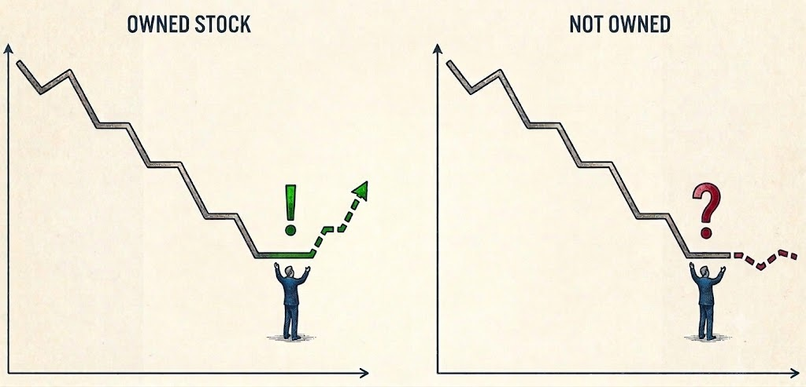
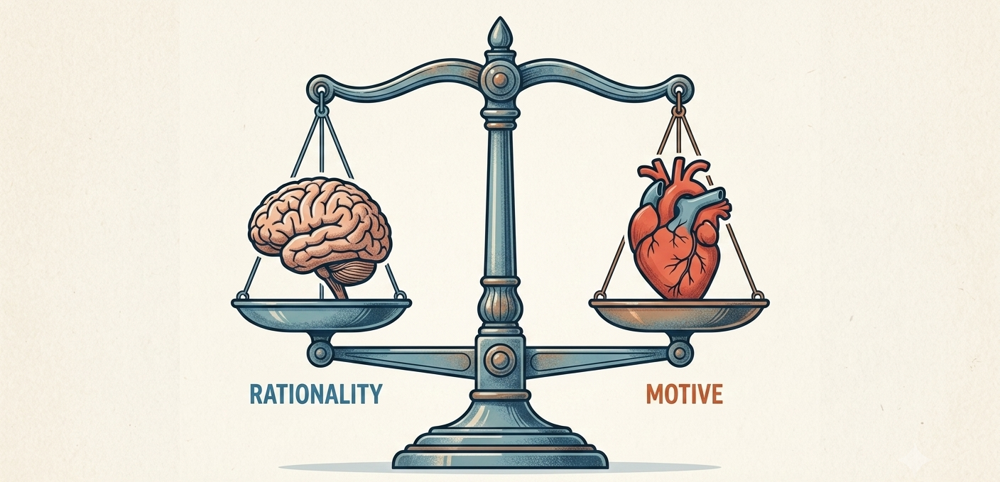

I am a PhD candidate in Economics at the University of Bonn (BGSE). My research lies at the intersection of
behavioral economics and finance, with a focus on motivated reasoning, investor behavior, and
the formation of beliefs under uncertainty.
Beyond academia, I have gained experience working in both the public and private sectors, which continues to inform my perspective on economic research and real-world decision-making.
Job Market Paper

Sell or Hold? Double Down! The Role of Ownership on Beliefs and (Re)Investment Decisions
(with M. Forti)
We document investors' tendency to double down on their losing positions.
We propose and test a motivated reasoning explanation for this behavior:
investors don't want to acknowledge their failures and therefore form optimistic beliefs about
the future performance of the poorly performing assets.
Working Papers

Motivated Reasoning and Bounded Rationality: Independence or Interaction?
We study the interaction between motivated reasoning and bounded rationality.
Do cognitive biases give individuals a convenient justification for reaching conclusions they already want to reach?
Conversely, when a cognitive bias points in the opposite direction from what someone wants to believe, do motivations help debias them?
We find that the two classes of biases do not compound, but crowd each other out.
Fast Declines, Slow Recoveries? Asymmetric Perceptions of Economic Change
(with Z. Liu, S. Kube, J. Lammers)
We document individuals' tendency to perceive the pace of negative economic developments as faster than that of equivalent positive ones. We identify the contextual reading of economic dynamics as a key driver for the phenomenon: individuals project the outcomes they expect in the graphs they observe.
Teaching
I have served as a teaching assistant for the following courses at University of Bonn.
| Course |
Level |
Term |
| Effective Programming Practices for Economists |
MSc/ PhD |
Winter 2025 |
| Effective Programming Practices for Economists |
MSc/ PhD |
Winter 2024 |
| Applied Data Analytics |
BSc |
Summer 2024 |
| Applied Microeconomics |
MSc/ PhD |
Summer 2024 |
| Effective Programming Practices for Economists |
MSc/ PhD |
Winter 2023 |
I joined TestWeCan (Milan, Italy) shortly after its founding in 2015 and served as Partner and Head of Didactics until 2020, when it
was acquired by Testbusters. I taught mathematics
and problem-solving to high school students preparing for the Bocconi University admission test,
coordinated a team of tutors, and organised orientation meetings at local high schools.
I also authored the first edition of the
test preparation coursebook.
{kind=link}
{kind=link}
{kind=link}
{kind=link}